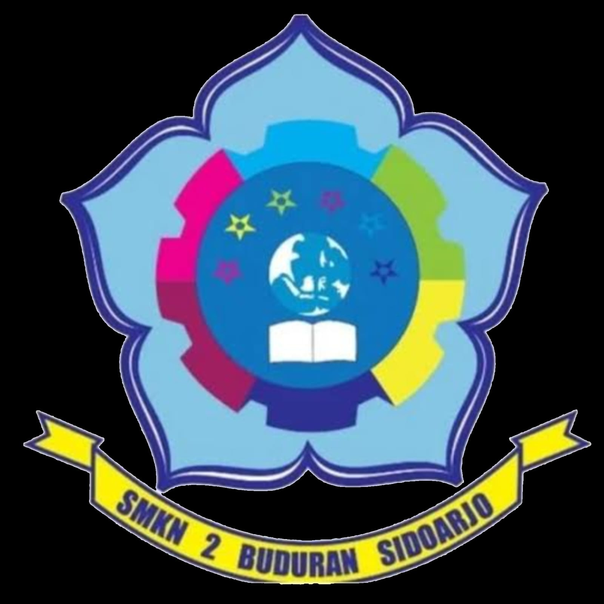

Tentang Saya

Nama saya Cinta Rosi Putri Pratama, saya lahir di Sidoarjo pada tanggal 3 Desember 2008. Saya adalah anak pertama dari dua bersaudara. Saat ini saya bersekolah di SMKN 2 Buduran Sidoarjo, jurusan Rekayasa Perangkat Lunak. Saya tinggal di Jln. Anusanata No. 8B RT.5/RW.7
Hal yang saya sukai:
- Cheesecake
- Mendengarkan musik
- Menggambar
Hal yang saya benci:
- Emotionally unintelligent people
- Sakit
- Suara ramai
- Serangga
Riwayat Sekolah
Saya menempuh pendidikan dasar di SDN Harjamukti 3. Selama bersekolah di sana, saya aktif mengikuti berbagai lomba, di antaranya: juara 2 lomba mewarnai, juara 1 lomba puisi, serta meraih deretan juara 1, 2, dan 3 pada rangkaian lomba yang diadakan oleh Timezone. Selain itu, saya juga pernah mengikuti Olimpiade Matematika hingga tahap semi-final.
Setelah lulus, saya melanjutkan pendidikan ke SMPN 6 Depok untuk semester pertama. Pada masa itu, saya meraih prestasi sebagai peserta terbaik dalam kegiatan MPLS. Namun, setelah satu semester, saya pindah ke SMPN 23 Depok. Di sekolah ini, saya semakin aktif mengembangkan kemampuan akademik maupun non-akademik. Saya pernah masuk 15 besar Olimpiade Sains Nasional (OSN) IPA, mengikuti Olimpiade Matematika hingga seleksi tahap 3, serta menorehkan prestasi di berbagai kegiatan, di antaranya:
- Juara 1 lomba menulis puisi (tahun pertama)
- Juara 2 lomba menulis cerpen (tahun kedua)
- Juara 1 dance modern pada class meeting (tahun kedua)
- Kelas saya menjadi ambalan terbaik pada kegiatan PENTA
- Juara 2 lomba cerdas cermat PAI (tahun kedua)
Skill Saya
Saya memiliki beberapa soft-skill, seperti:
- Leadership & Teamwork
- Public Speaking
- Mudah beradaptasi
- Problem Solving
- Manajemen Waktu
Dan untuk beberapa Hard-skill saya adalah:
- Keterampilan Bahasa & Sastra
- Seni & Performance
- Kemampuan Akademik
Hobi Saya
.jpeg)
Saya memiliki beberapa hobi, antara lain:
- Membaca buku klasik
- Menulis puisi
- Menonton film/anime
- Menggambar
Kegiatan Saya

Jadwal kegiatan Sekolah
| Jam Ke- | Senin | Selasa | Rabu | Kamis | Jumat |
|---|---|---|---|---|---|
| 1 | PPLG | B.Indo | PP | PPLG | B.Indo |
| 2 | |||||
| 3 | IPAS | PJOK | B.Inggris | ||
| 4 | |||||
| 5 | PAI | Sejarah | Informatika | IPAS | |
| 6 | MTK | ||||
| 7 | BK | KDA | |||
| 8 | IPAS | PPLG | B.Inggris | ||
| 9 | MTK | - | |||
| 10 | B.Jawa | SB | |||
| 11 | - |
Jadwal kegiatan dirumah
| Hari | Jam | Kegiatan |
|---|---|---|
| Senin-Jumat | 04:20 | Sholat subuh |
| 04:45 | Beres" rumah | |
| 05:00 | Sarapan bersama | |
| 05:15 | siap" sekolah | |
| 06:00 | berangkat sekolah | |
| 07:00 | Sekolah | |
| 17:00 | Pulang sekolah | |
| 17:20 | Mandi | |
| 18:00 | sholat maghrib | |
| 18:15 | Tadarus | |
| 19:00 | sholat isya | |
| 19:20 | Makan malam | |
| 19:45 | Beres" rumah | |
| 20:00 | Tidur |
Jadwal kegiatan saat libur
| Hari | Jam | Kegiatan |
|---|---|---|
| Sabtu-Minggu | 04:30 | Sholat subuh |
| 04:45 | Beres" rumah | |
| 06:00 | Masak bersama | |
| 07:00 | Sarapan bersama | |
| 07:45 | Olahraga pagi | |
| 08:15 | Mandi | |
| 08:30 | Menyiapkan cemilan & minuman | |
| 08:45 | Mengerjakan pr/projek | |
| 10:00 | Sholat dhuha | |
| 10:15 | Tadarus | |
| 11:00 | Waktu keluarga | |
| 12:00 | Sholat Dhuhur | |
| 12:20 | Tidur siang | |
| 14:00 | Bangun | |
| 14:05 | Beres" rumah | |
| 15:25 | Sholat ashar | |
| 15:30 | Mengerjakan pr/projek | |
| 18:00 | Sholat maghrib | |
| 18:15 | Tadarus | |
| 19:00 | Sholat isya | |
| 19:20 | Makan malam | |
| 19:45 | Beres" kamar | |
| 20:00 | Tidur |
Kontak Saya
Jika ingin menghubungi saya, silahkan hubungi melalui: